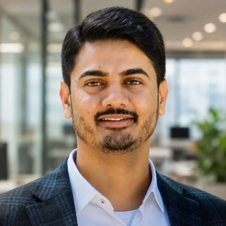

Forward Deployed Engineer · Automation Technical Lead
I live in Sacramento and lead forward-deployed engineering at HuLoop Automation. My team and I work directly with our customers, 35+ of them so far across banking, credit unions, legal services and utilities. What I enjoy most is taking a customer's hardest operational problem from the first conversation to a system that runs reliably in production. I have a B.S. in Computer Science from San Francisco State University and an M.S. in Engineering Management from Westcliff University.
Focus: forward deployment, solution architecture, process automation, intelligent document processing, production operations, engineering leadership, and customer and executive communication.
Systems I've automated work inside: SAP, Salesforce, ServiceNow, Jack Henry SilverLake, Fiserv Premier and CSI NuPoint.
Email: mitul.savani1@gmail.com.
Things I work on:
- Being close to the problem. I lead each engagement from discovery to deployment, working with the client's teams and business analysts. I architect each process as its own agent, get it through the customer's security review, support it live after go-live, and present the ROI to the client's executives.
- Production, not demos. At a regional bank, I moved 4 deposit operations processes from manual review to unattended agents: mobile deposit review, merchant remote deposits, duplicate-check investigation and high-dollar transfer-limit approvals. They cover about 1,200 mobile checks a week and 4,500 merchant deposits a month, with risky items still routed to a person. As trust grew, the bank raised the per-check auto-approval limit from $5,000 to $25,000.
- Configuration over code. I rebuilt a failing C# pipeline (100,000+ documents a week) into a configuration-driven platform that serves 4 clients from one deployment.
- Working around the platform. When the platform couldn't handle a legal-collections client's logic natively, I built a Python and VBA engine that processes 12,000+ records in about 84 seconds at 99.6% accuracy.
- Migrations. I built a Python conversion engine that moved 18+ Nintex automation scripts onto HuLoop, so clients could switch without rebuilding each workflow by hand.
- Turnarounds. I turn around at-risk client accounts with a recovery plan and a timeline. One client went from failing runs to recovered in about 2 weeks, then expanded its automations.
- Field to product. An SAP proof of concept became a paid SOW. At the client security team's request, I changed our agent to run without admin rights, and that change shipped to every client. I've also written 22 product requirements to cut our builders' debugging and testing time.
- People. I've helped grow our engineering team from 7 to 24, and I manage and mentor 12+ engineers across the US and India. I want each of them to be able to own a customer end to end.
Work
- HuLoop Automation, Automation Technical Lead (2024 – present). Forward-deployed automation delivery for 35+ customers across banking, credit unions, legal services and utilities, where I manage 12+ engineers on about 50 automation projects.
- AgreeYa Solutions, Mobile Developer (2020 – 2025). Led mobile delivery for 5 public-sector clients with four engineers and a QA engineer. For South Coast AQMD, I owned three enhancement phases of the native iOS and Android air-quality and fire advisory apps over three years, from module architecture and requirements through deployment. I architected and led Flutter citizen apps for the Town of Morrisville (parks, real-time bus stops and notifications) and the Town of Marana (a lost-pet finder), a private staff directory for Stanislaus County, and a member app with 10+ modules, including a learning management system and a business directory, for Detroit Wayne Integrated Health Network. I also led CEMA, an internal Flutter platform of plug-and-play city modules, and partnered with DevOps on a CI framework that sped up testing and releasing Flutter, Ionic and native apps to the App Store and Google Play. AgreeYa was later acquired by Computacenter.
Earlier
- Kandou, Software Engineer (2019 – 2020). Built the core of a volunteer app in React Native and shipped releases to 500+ active users.
- Claryty, Software Development Intern & Undergraduate Researcher (2018 – 2019). A React Native app for FDA adverse-effect data, built with Stanford researchers on 20+ million rows of FDA data. 3rd prize out of 240 projects at SF State's College of Science & Engineering showcase. Research poster (PDF).
Education
- M.S. in Engineering Management, Westcliff University. 4.0 GPA, summa cum laude.
- B.S. in Computer Science, San Francisco State University. 3.82 GPA, magna cum laude, Dean's Scholar List. Founded ACM tutoring services, was a TA for the MobileSpace React Native bootcamp, and helped organize SF Hacks (350+ attendees, $18,000 raised from 30+ sponsors).
Open source
- React Native at Meta: migrated the ImageStore native module to TurboModules (v0.59).
- React Native website: updated API and component docs for v0.62.
- React Native Directory: added 47 libraries.
- GitHub Education: reviewed 180+ pull requests for GitHub's class-of-2020 graduation.
Away from work: spending quality time with my family, working on my golf swing, and training for Hyrox and CrossFit.